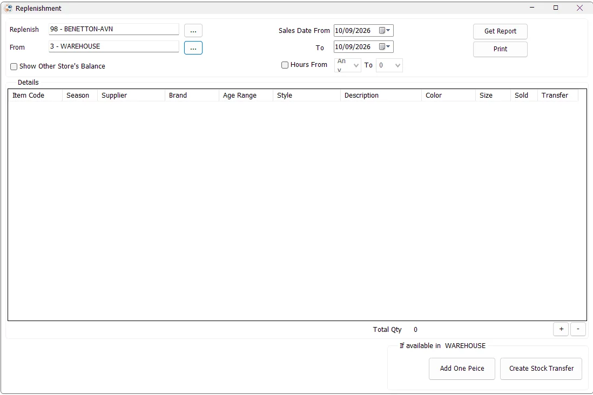

Replenishment
Replenishment helps a store convert recent sales into a suggested Stock Transfer from another store or warehouse. IMS analyzes the items sold by the destination store, shows available stock by source location, lets the user choose the quantity to transfer, and then opens Stock Transfer with the selected items already prepared.

Select the stores
Replenish is the destination store that needs stock. From is the store or warehouse that will supply the replenishment. The available locations follow the user's Stock Transfer permissions.
If only one authorized location is available, IMS can fill the store automatically and disable the store-selection buttons. When the From and Replenish stores are the same location, transfer-quantity actions are not available.
Changing either store after a replenishment report has been generated clears the current result after confirmation.
Choose the sales period
Use Sales Date From and To to define the sales period IMS should analyze for the destination store.
Enable Hours From to limit the calculation to a time-of-day range. IMS validates that the starting hour is not later than the ending hour.
Generate the replenishment report
Click Get Report. IMS reads the destination store's sales and returns during the selected period and calculates a net Sold quantity for inventory items. Sales transaction types 51/52 add quantity while return types 53/54 reduce it. Only items with a positive net sold quantity are included.
The report then joins those sold items to positive stock balances. By default, the stock view is limited to the selected From store and the Replenish store.
Report columns
| Column | Meaning |
|---|---|
| Item Code | IMS inventory SKU. |
| Season | Statistical/season period assigned to the item. |
| Supplier / Brand | Supplier and brand from the item master. |
| Age Range | Age-range classification assigned to the item. |
| Style / Description / Color / Size | Product and variant details. |
| Sold | Net quantity sold by the destination store during the selected date/hour criteria. |
| Transfer | Quantity currently selected to replenish. |
| Store balance columns | Positive on-hand quantity currently available in the source/destination stores, or in other stores when Show Other Store's Balance is enabled. |
Choose quantities to transfer
Select a row and use + to add one unit to its Transfer quantity. IMS simultaneously reduces the displayed available quantity in the selected From-store column. Use − to reverse one selected unit and return it to the displayed source balance.
The keyboard + and − keys perform the same actions while the report grid has focus.
Add One Piece adds one unit to every displayed item that still has at least one unit available in the selected From store. This is useful when the replenishment policy is simply to send one piece of every item that sold and is available.
Total Qty shows the total number of pieces currently selected for transfer.
Create the Stock Transfer
After selecting the replenishment quantities, click Create Stock Transfer. The user must have permission to add Stock Transfers and at least one item must have a Transfer quantity greater than zero.
IMS opens the normal Stock Transfer screen with the From store, destination store and selected items already loaded. The transfer note records the sales date range used for replenishment; when an hourly filter was used, the note also records the selected hour range.
The Stock Transfer screen remains the final step: review the selected lines and quantities there, then save or save-and-print the voucher using the normal Stock Transfer workflow.
Typical replenishment workflow
- Select the store to Replenish.
- Select the supplying From store or warehouse.
- Select the sales date range and, if needed, an hour range.
- Enable Show Other Store's Balance when wider stock visibility is useful.
- Click Get Report.
- Review the Sold quantity and available stock columns.
- Use +, − or Add One Piece to prepare the Transfer quantities.
- Confirm Total Qty.
- Click Create Stock Transfer and complete the voucher in Stock Transfer.
Relationship with other IMS modules
Replenishment uses sales activity from the destination store, item classifications from Manage Items/Suppliers/Brands/Age Ranges/Statistical Periods, current stock balances, and the user's Stock Transfer permissions. It does not create a separate inventory document of its own; it prepares the quantities and hands them to Stock Transfer.